Activa el modo Compartir en FinanceTracker
Despliega el backend de una sola vez y da acceso a tus colaboradores para que vean (y, si quieres, editen) solo lo que tú decidas. Tu hoja de cálculo queda privada: nadie más la ve, todo entra por la app.
0Antes de empezar
Reúne estos tres elementos y listo.
- Tu cuenta de Google con la que creaste la hoja de FinanceTracker.
- Tu app desplegada (la dirección web donde la usas, por ejemplo
tu-app.com). - El archivo
Code.jsdel backend. Si lo tienes del proyecto, sácalo con el comandopnpm build:script; se genera enapps/script/dist/Code.js.
1Tu app ya está lista
Abre tu app e inicia sesión como dueño. En el menú lateral verás la sección Compartir.
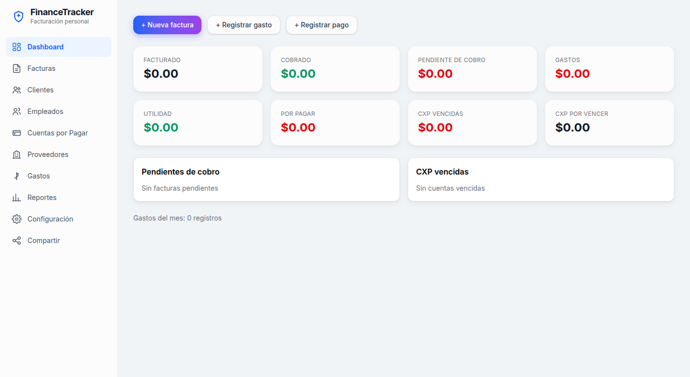
2Abre tu hoja de cálculo
La hoja FinanceTracker es tu base de datos. Aquí vives tú, el dueño. No la compartas con nadie.
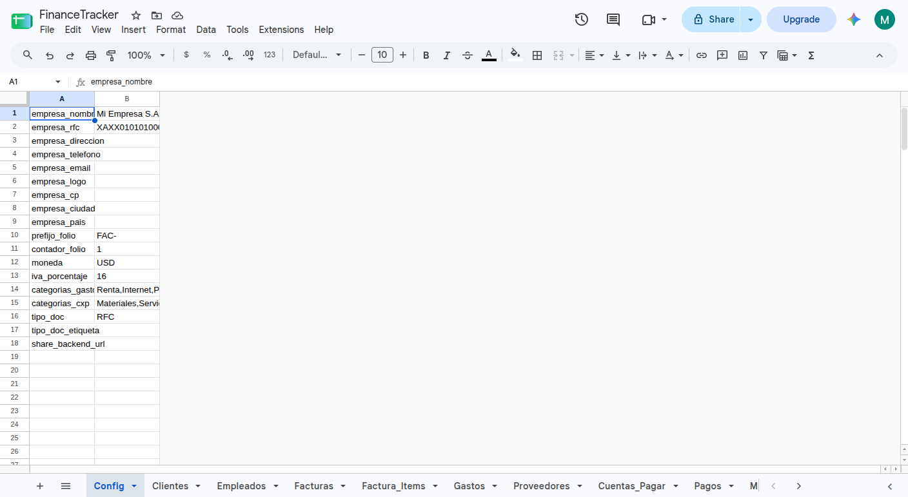
3Abre el editor de Apps Script
Desde la hoja, ve al menú Extensions → Apps Script.
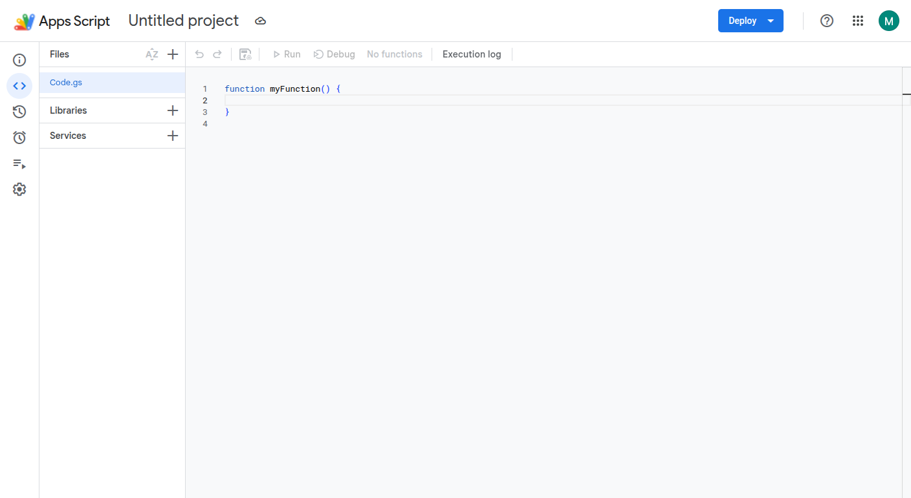
Code.gs vacío (pantalla 1). Es el proyecto del backend, ligado a tu hoja.4Pega el código del backend
Borra el contenido del editor y pega todo el archivo Code.js.
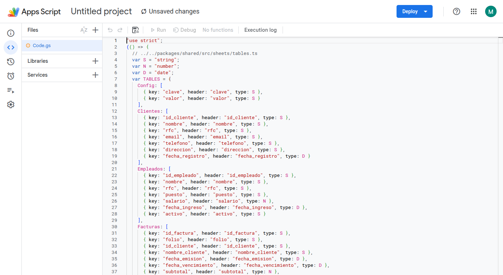
Code.js. Si generaste el proyecto con pnpm build:script, también sale en apps/script/dist/Code.js.5Crea el deployment
Arriba a la derecha, botón Deploy → New deployment.
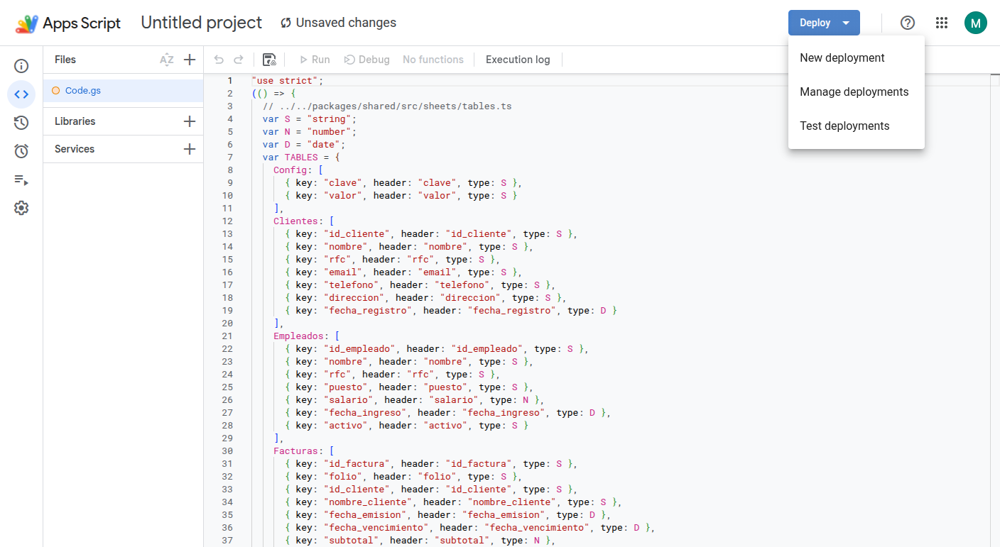
6Configura el web app
Usa estas tres opciones exactas:
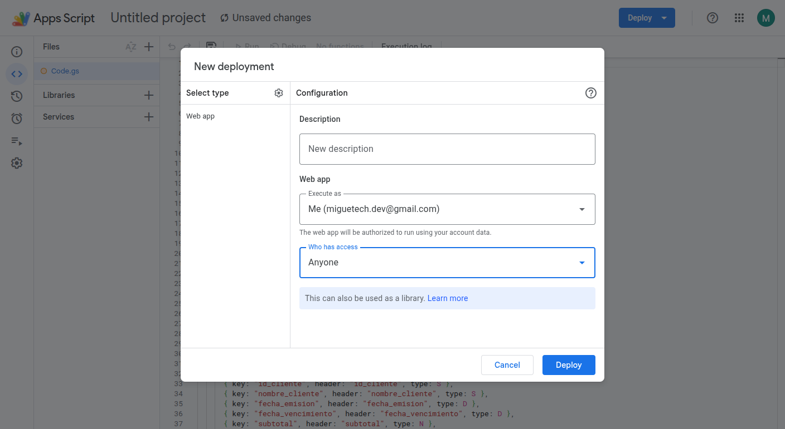
| Opción | Valor | Por qué |
|---|---|---|
| Tipo | Web app | El backend responde por internet. |
| Ejecutar como | Yo (tu cuenta) | El backend usa tus permisos; así lee tu hoja sin compartirla. |
| Quién tiene acceso | Cualquier persona | Los invitados pueden llamar al backend (los roles se controlan dentro de la app). |
7Autoriza el acceso
Google pedirá que autorices el proyecto. Es normal que diga que la app "no está verificada": es tu propio script.
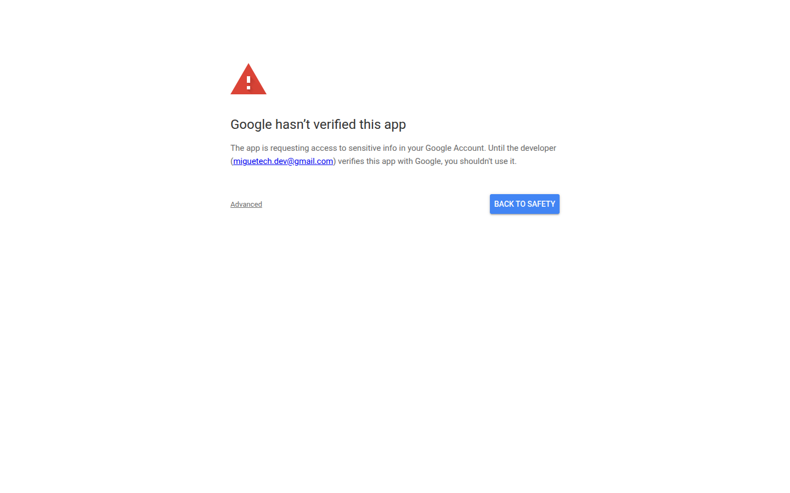
8Copia la URL del web app
Al terminar, Apps Script muestra la URL del deployment. Cópiala completa (termina en /exec).
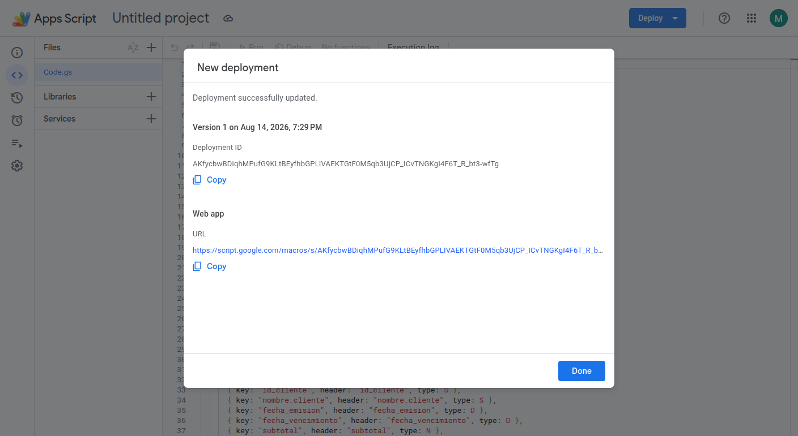
/exec.9Vuelve a tu app: abre Compartir
En el menú lateral de tu app, abre la sección Compartir.
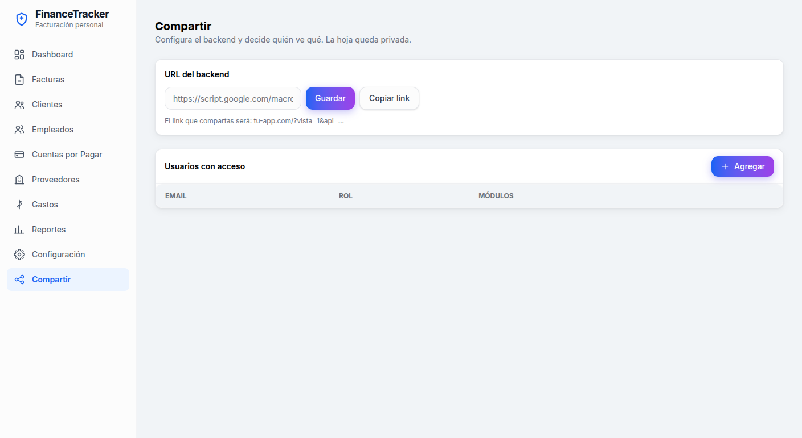
10Pega la URL del backend y guárdala
En "URL del backend", pega la URL que copiaste y presiona Guardar.
11Agrega un colaborador
Presiona Agregar, escribe su email y elige un rol. Si eliges Asistente, marca también qué módulos puede editar.
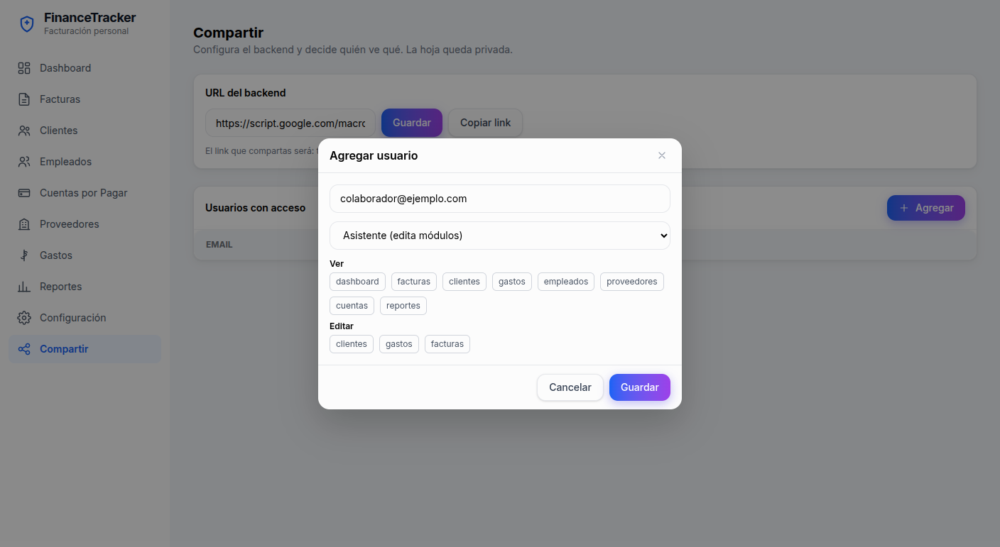
12Revisa la lista de usuarios
El colaborador aparece en la tabla. Ahí puedes cambiar su rol o eliminarlo cuando quieras (pierde el acceso de inmediato).
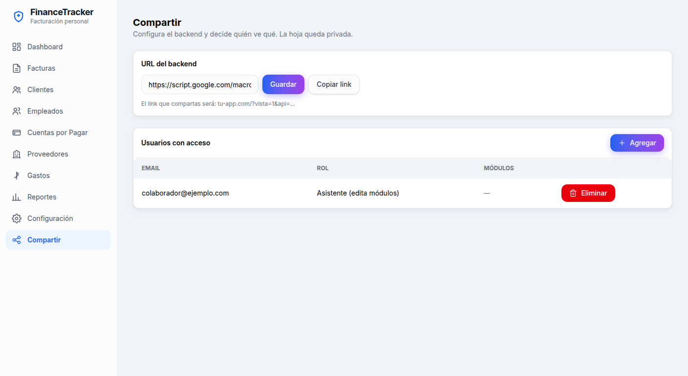
13Comparte el link
Presiona Copiar link y envíalo a la persona. Al abrirlo, elegirá su cuenta de Google y verá solo lo suyo.
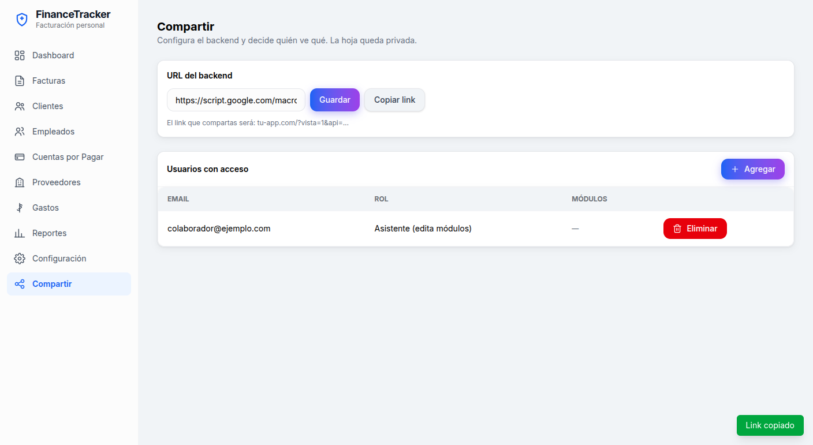
·Roles disponibles
Cada usuario tiene un rol. El admin eres tú (el dueño), automático y sin necesidad de configurarlo.
| Rol | Ve | Edita |
|---|---|---|
| Admin (tú) | Todo | Sí |
| Asistente | Sus módulos | Clientes, gastos y facturas (los que le marques) |
| Solo lectura | Todos los módulos | No |
| Ver facturas | Facturas y clientes | No |
| Ver reportes | Dashboard y reportes (KPIs) | No |
| Ver gastos | Gastos | No |
| Ver empleados | Empleados | No |
| Ver cuentas | Proveedores y cuentas por pagar | No |
| Personalizado | Los módulos que tildes | No |
!Seguridad: 3 reglas que no se negocian
- Nunca compartas la hoja de cálculo por Google. Quien la abre ve todo, sin roles.
- Nunca des acceso al proyecto de Apps Script (ni editor ni visor).
- Comparte solo el link de la app con personas de confianza. Para quitar acceso: borra al usuario en Compartir.
?Preguntas frecuentes
Veo "Google hasn't verified this app" / "app no verificada"
Es normal: es un proyecto personal. En la pantalla de autorización elige Advanced → Go to (unsafe) y continúa. Solo lo ves tú al desplegar.
El invitado ve "Sin acceso" o una pantalla vacía
Verifica que su email exacto esté en la sección Compartir y que la URL del backend sea correcta (termina en /exec). Pídele que abra el link en una ventana normal e inicie sesión con esa cuenta.
El invitado ve "app in testing mode / access blocked"
Es la pantalla de consentimiento de OAuth en modo Testing. Publica la app en Google Cloud Console (APIs & Services → OAuth consent screen → Publish app) o agrega a esa persona como test user.
¿Cómo quito el acceso a alguien?
En Compartir, presiona Eliminar en su fila. Pierde el acceso de inmediato, aunque conserve el link.
¿Puede un asistente borrar datos?
No. El asistente crea y edita en sus módulos; borrar es solo del admin (tú).
¿Cambia algo en mi uso diario?
No. Tú sigues usando la hoja y la app igual que siempre, con acceso total.